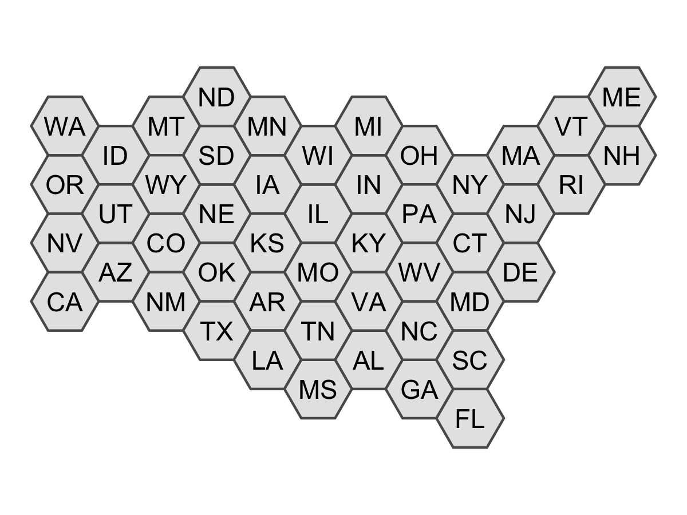
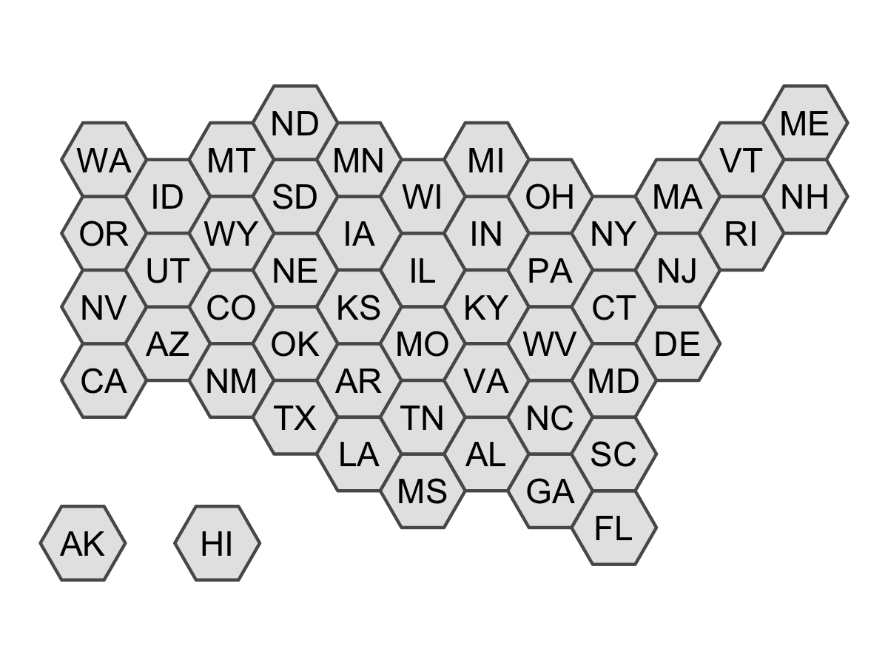
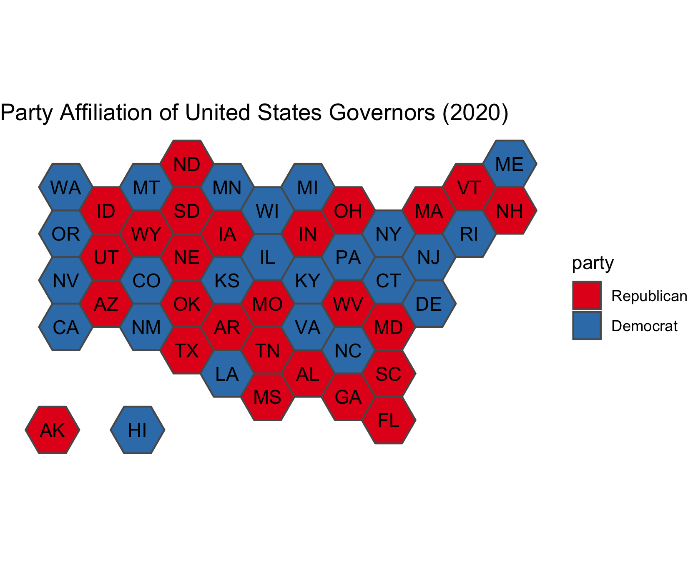
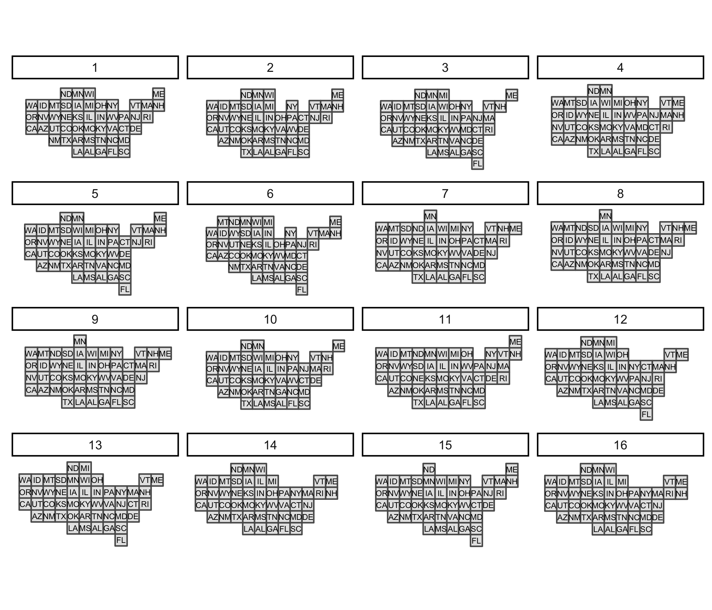

Overview
The tilemaps package implements an algorithm for generating maps, known as tile maps, in which each region is represented by a single tile of the same shape and size. When creating a tile map, the goal is to arrange tiles in a manner that preserves local relationships between regions, as well as the overall shape of the original map. The algorithm implemented in this package was proposed by Graham McNeill and Scott Hale in the paper “Generating Tile Maps” (2017). Using a tile map is advantageous when trying to visualize data where the importance of a region does not depend on the geographic area of the region. Tile maps prevent regions with large areas from dominating a map and prevent regions with small areas from going unnoticed. The package allows the user to generate a single tile map or many tile maps, which can be compared by using cost functions or by plotting the maps.
Installation
You can install the latest release from CRAN with:
install.packages("tilemaps")You can install the development version from GitHub with:
# install.packages("devtools")
devtools::install_github("kaerosen/tilemaps")Example
To create a single tile map, the generate_map() function can be used. In the following example, a tile map with flat-topped hexagons is generated for the contiguous United States using the governors dataset, which is part of the tilemaps package.
library(tilemaps)
library(sf)
library(dplyr)
library(ggplot2)
governors <- governors %>%
mutate(tile_map = generate_map(geometry, square = FALSE, flat_topped = TRUE))
ggplot(governors) +
geom_sf(aes(geometry = tile_map)) +
geom_sf_text(aes(geometry = tile_map, label = abbreviation),
fun.geometry = function(x) st_centroid(x)) +
theme_void()
The generate_map() function requires an object of class sfc_POLYGON or sfc_MULTIPOLYGON as input. If the coordinates of the sfc object are in terms of longitude and latitude, the coordinates will need to be transformed to a planar projection before creating the tile map. The square argument controls whether the tiles are squares or hexagons, and the flat_topped argument controls whether or not hexagons are flat-topped. The generate_map() function only works for contiguous regions. However, after a tile map has been generated, the create_island() function can be used to add islands to the layout of the tile map.
all_states <- governors %>%
add_row(abbreviation = "AK", party = "Republican",
tile_map = create_island(governors$tile_map, "lower left")) %>%
add_row(abbreviation = "HI", party = "Democrat",
tile_map = create_island(governors$tile_map, c(-12050000, 3008338)))
ggplot(all_states) +
geom_sf(aes(geometry = tile_map)) +
geom_sf_text(aes(geometry = tile_map, label = abbreviation),
fun.geometry = function(x) st_centroid(x)) +
theme_void()
Once a tile map has been created, coloring tiles according to another variable is simple. In the following code, the states are colored according to the party affiliation of the governor. This is an example of a situation where it is useful to use a tile map, instead of a regular map, because each state has only one governor, regardless of the area or population of the state.
ggplot(all_states) +
geom_sf(aes(geometry = tile_map, fill = party)) +
geom_sf_text(aes(geometry = tile_map, label = abbreviation),
fun.geometry = function(x) st_centroid(x)) +
scale_fill_brewer(palette = "Set1") +
ggtitle("Party Affiliation of United States Governors (2020)") +
theme_void()
To create and compare more than one tile map, the many_maps() function can be used. In the following example, 16 candidate tile maps are generated and plotted.
us_maps <- many_maps(governors$geometry, governors$abbreviation,
prop = c(0, 0.1), interpolate = c(0.5, 1),
smoothness = c(0, 20), shift = list(c(0,0), c(0,0.5)))
The prop, interpolate, smoothness, and shift arguments add variation at different steps in the algorithm to create different candidate tile maps. The total number of maps generated by the many_maps() function is the product of the lengths of these arguments. The output of the many_maps() function is a data frame in which each row corresponds to one map and the columns contain the generated maps, the parameters used for creating the maps, and the costs associated with each map. The different sources of variation and types of costs are discussed in the tilemaps vignette.
The plot of all the candidates maps shown above can be generated using the plot_many_maps() function. The function requires a list of maps, which are of class sfc_POLYGON, and the labels for the regions of the map. Below is code for how the plot_many_maps() function can be used to create the same plot as before.
plot_many_maps(us_maps$map, governors$abbreviation)